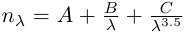

Material::Conrady class reference
[Core module]
Declaration
#include <Goptical/Material/Conrady>
namespace Goptical {
namespace Material {
class Conrady;
};
};
This class is a member of the Material namespace.
Inheritance
Description
This class models optical properties of dielectric materials with conrady refractive index dispersion formula.
Refractive index formula is:

with  the micrometer wavelength.
the micrometer wavelength.
Members
See also the full member list section for this class.
Inherited members
- 36 members inherited from Dielectric
Functions
- Conrady()
- Conrady(double A, double B, double C)
- virtual double get_measurement_index(double wavelen) const
- void set_coefficients(double A, double B, double C)
Members detail
Create an empty conrady model
Create an conrady model with given coefficients
This virtual function implements the get_measurement_index pure function declared in the Dielectric base abstract class.
Documentation inherited from base class:
Get material relative refractive index in measurment medium at specified wavelen in nm.
Change conrady constant term